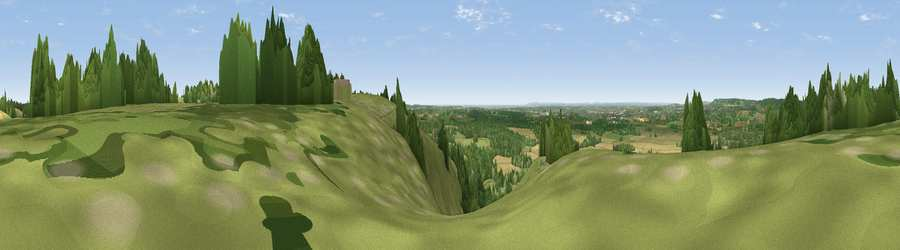

Viewpoint near Brook
#5075 in England · top 11% of its area beats it · near BrookWhere it is
The exact computed spot (TR 07725 45475). Click the marker for map links.
The view, rendered

A 360° render of this exact spot computed from the terrain model, tree cover and land cover — summer colours, afternoon light, calibrated against photographs of famous viewpoints. Real trees, hedges and buildings will differ in detail.
The panorama
Grey silhouette: terrain skyline in each direction (720 bearings, Earth curvature and refraction included). Dashed green: skyline with trees (+15 m) and buildings (+8 m) as obstacles. Blue strip: how far the ground is visible on each bearing.
Where the view opens
Wedge length = distance to the farthest visible ground on that bearing (vegetation-aware). Rings at 10, 25 and 50 km.
What fills the view
43% grassland · 37% cropland · 18% woodland · 1% built-up
Angular shares of the visible panorama (visual magnitude), not map area. Landscape diversity 0.48 (0–1 Shannon).
Key numbers
More beautiful places nearby
The staircase of upgrades: each row has a higher view potential than everything closer. Driving times are estimates from straight-line distance, calibrated against real road routing — check an actual route before setting out.
| Place | Direction | Drive | Score |
|---|---|---|---|
| Viewpoint near Brook | SSE · 0 km | ~1 min | 70.9 |
| Viewpoint near Brabourne | SE · 4 km | ~8 min | 71.6 |
| Viewpoint near Brabourne | SE · 4 km | ~10 min | 71.9 |
| Viewpoint near Westwell | WNW · 10 km | ~19 min | 72.2 |
| Viewpoint near Lympne | S · 11 km | ~20 min | 72.6 |
| Tolsford Hill | SE · 11 km | ~20 min | 77.9 |
| Viewpoint near Capel-le-Ferne | ESE · 18 km | ~31 min | 80.2 |
| Viewpoint near Willingdon | SW · 66 km | ~89 min | 83.4 |
51.17078, 0.97006 · source: screening · position refined by local search. Computed location — check access rights before visiting.